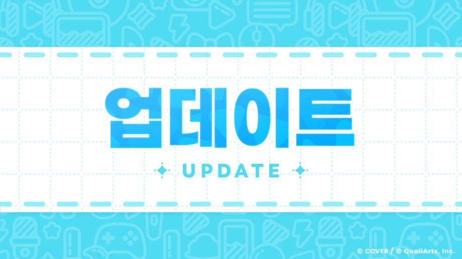

이용해 주셔서 감사합니다.
「hololive Dreams」 운영팀입니다.
2026-10-02 11:00:00에 Ver.1.2.1 업데이트를 진행했습니다.
업데이트는 스토어에서 실행하실 수 있습니다.
스토어에 반영된 후 이용하실 수 있으므로, 반영되기까지 잠시만 기다려 주시기 바랍니다.
스토어에 반영되는 시간은 개인차가 있을 수 있으므로 미리 양해 부탁드립니다.
※강제 업데이트는2026-10-06 11:00:00경 예정되어 있습니다.
※강제 업데이트 전까지 수동 업데이트를 하지 않은 경우, 강제 업데이트 직전까지 플레이하던 라이브 및 미니 게임 등의 결과가 반영되지 않을 가능성이 있습니다.
◆오류 수정
다음 오류를 수정하였습니다.
- [옵션] → [알림] → [라이브 부스트 전체 회복]과 [미니 게임 부스트 전체 회복]이 OFF로 설정되어 있으면 아래와 같은 오류가 발생함.
-
- 라이브, 미니 게임을 플레이한 후, 부스트 수가 플레이 전의 수치로 표시됨.
- 미니 게임 부스트 교환시, 메가 스피어 코인, 소다팝 코인을 교환한 후 부스트 수가 교환 전의 수치로 표시됨.
- 그 외 경미한 오류를 수정.